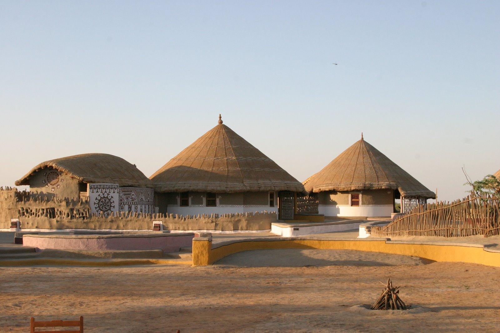

With its notable mud architecture, a medley of craft traditions and exquisite apparel, this eminently colorful and culturally rich land has a wonderful handcrafted feel. Each community has its own oral traditions, dance, craft and dress. Stretching along the Tropic of Cancer, from Rajasthan to the edge of Pakistan and the Arabian Sea, Kutch covers a little over 45000 sq km and is geographically one of India's largest and most distinctive districts.